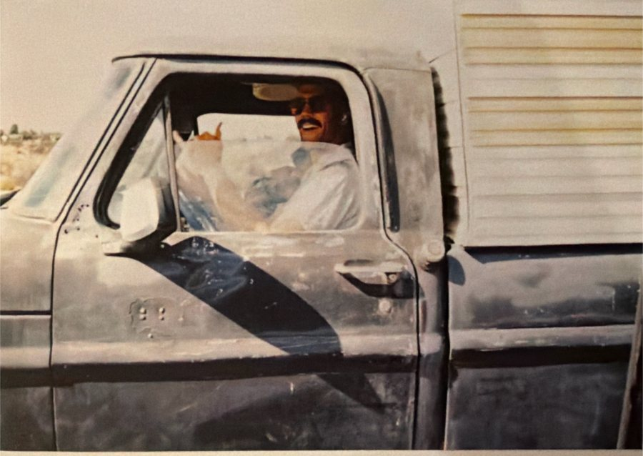
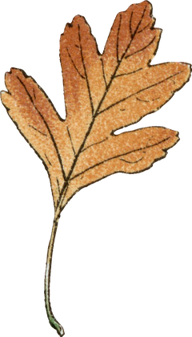
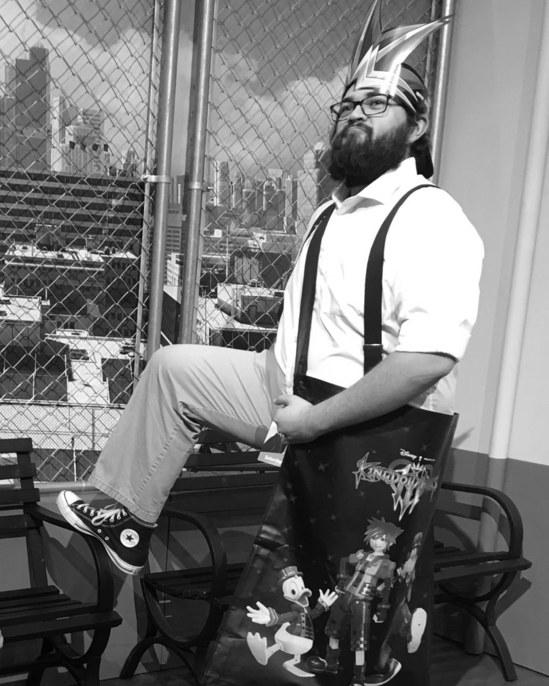
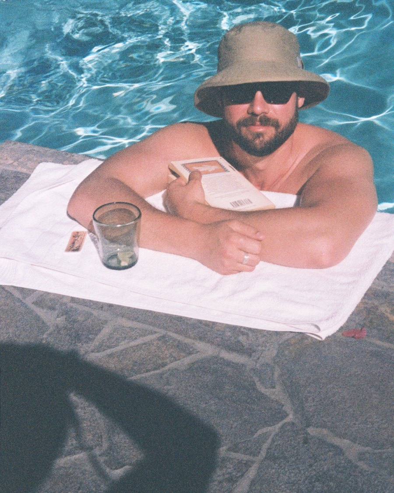

The Void
This page is set on a wide grid. Rotate to landscape for the intended reading experience.
Anti-Bummer Book Club
The Void partners with Anti-Bummer Club to present the Anti-Bummer Book Club. Click below for details, which will take you to the Anti-Bummer Club website.
Take me there!Meet the Void Folk
The Void is made possible by many people, and every single contributor is beyond valuable. Here are the people that help make The Void become a reality four times a year, plus a full list of our contributors.
Founding editor
Anthony Draper is the founding editor of The Void. He works as an attorney in Costa Mesa, CA and an adjunct professor at Concordia University Irvine, and plays as a writer, photographer, motorcycler, tennis player, typewriter-fixer, and proper-sized-pint-drinker.
Latest contribution
Albert Camus, the Unbeliever, and the Christian
Essays · Issue 010 (Fall 2026) · p. 9
Founding contributor
Timothy Yim-Stueve is a writer from Bend, Oregon and founding contributor of The Void. His day job is as a film archivist at the Sherman Grinberg Film Library, projectionist at American Cinematheque, and senior projectionist at the UCLA Film and Television Archive in Los Angeles. His blog, Lost in the Filmhouse, can be found at timothystueve.substack.com
Latest contribution
Against a Frictionless World
The Void Goes to the Movies! · Issue 010 (Fall 2026) · p. 22

Regular contributor
Alex Lange (C-001) is a lucky husband, proud father, and hopeless hobby addict. As a jack of all—probably more like a seven of clubs—and master of fun, he gets his kicks dragging friends into multi-sensory book club meetings and minibike cult bonanzas. Propelled by a love for good words, tall drinks, and long walks, Alex spends his days as an electrical estimator and remaining free time coming up with more projects for his to-do list.
Latest contribution
Costa Mesa is Dead. Dinerboy is Alive.
Artist Interview · Issue 009 (Summer 2026) · p. 21
Regular contributor

Paul A. Mendez is a ghost writer for hire. Additional pieces can be found at relevanceneverforgets.com and relevanceneverforgets.medium.com.
Latest contribution
Musings of a Boring Man
Essays · Issue 010 (Fall 2026) · p. 57


Photographer
Steven Dunn is forever connecting the dots of society, and tries to connect viewers to humanity in his film photography.
Latest contribution
Costa Mesa is Dead. Dinerboy is Alive.
Photography · Issue 009 (Summer 2026) · p. 21
Every other contributor
Hover a name to see what they contributed.
Reading year-round, four issues a year.
Submit to The Void